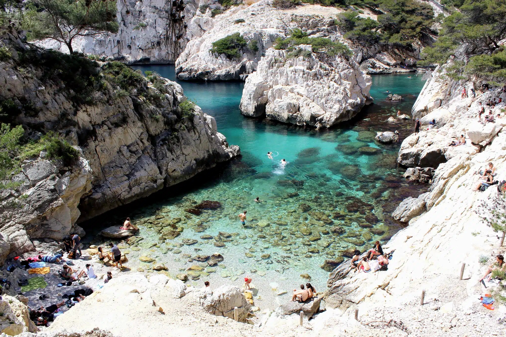

 Les Calanques de Sugiton, situées au sud de Marseille, sont un joyau naturel de la Méditerranée.
Ce site spectaculaire, composé de criques rocheuses et de falaises escarpées, offre des paysages à couper le souffle.
Les eaux cristallines de Sugiton invitent à la baignade et au snorkeling, tandis que les sentiers environnants permettent des randonnées panoramiques.
Ce lieu enchanteur, prisé des amoureux de la nature, est idéal pour une escapade au cœur de la beauté sauvage.